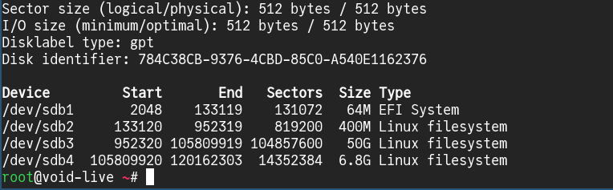
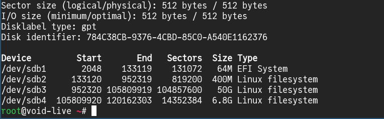
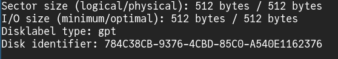

Esse é, provavelmente, o meu maior projeto textual, em termos de extensão. Inicialmente, o nome desse artigo era "my linux installation". Escolhi esse nome pois pretendia descrever a instalação de um sistema operacional baseado em linux, junto à minha própria experiência e preferências. Mas, em algum ponto, me ocorreu transmitir a minha esperiência com a computação, em geral. Há muito tempo, minha versão criança olhava para um computador e enxergava uma "janela" para vários jogos, ou vários vídeos de pessoas jogando jogos, ou uma máquina de trabalho onde adultos, com paletó e gravata, passavam horas digitando documentos. Mudei o título desse artigo para "my linux world", a fim de registrar e rememorar uma mudança gradual (mas significativa) que transformou a forma como eu enxergo computadores. Apesar do trabalho que será tentar descrever isso, não é difícil perceber o meu entusiasmo por esse tema.
Computador
Um computador moderno de uso genérico (aquele que se usa para digitar textos, para navegar na internet, para ouvir música, para visualizar imagens e para consumir vídeos) é uma máquina que executa funções, como as já exemplificadas, e interage com o usuário, recebendo e despachando informação
A entrada de informação é chamada de "input"; a saída, de "output".
Dispositivos de interface na comunicação entre usuário e computador são denominados periféricos. Mouse e teclado, que transmitem informação do usuário ao computador, são periféricos, assim como tela e dispositivos de saída de áudio, os quais transmitem informação do computador ao usuário.
As funções executadas por um computador podem ser programadas por um humano. Nesse caso, o conjunto de instruções escrito, armazenado e executado por um computador é nomeado "programa" ou "software".
Além de instruções, a memória de um computador também pode armazenar dados não executáveis. A memória de acesso aleatório (RAM) e a unidade de estado sólido (SSD) são dispositivos que realizam essa função.
A informação armazenada em uma memória de acesso aleatório é perdida caso a unidade seja privada de corrente elétrica por alguns segundos. Por esse motivo, esse dispositivo é considerado um tipo de memória volátil. Ainda assim, as instruções executadas em um processador estão contidas na RAM ou são tranferidas para lá a partir da memória não volátil, já que o tempo de acesso à informação e o desgaste são menores na memória volátil. Por esse motivo, o output do processador também é despejado na RAM
Por exemplo, quando uma imagem é aberta em um editor de imagens, o processador transfere a imagem e o programa do disco rígido até a RAM. Após isso, as instruções do programa são lidas e executadas. Como, resultado a interface gráfica do programa aparece na tela do usuário, junto à imagem sendo editada. Quando o usuário usa o mouse para selecionar a ferramenta de pincel e desenhar algo sobre a imagem, essa alteração é registrada na RAM. Ao selecionar a opção [salvar], a imagem alterada será transferida da RAM para o disco rígido. Ao fechar o programa, ele é removido da RAM
Um conjunto de programas que interagem de forma organizada e funcional entre si é denominado "sistema operacional". Android, Windows e GNU/Linux são exemplos desses sistemas.
GNU/Linux
O termo "GNU/Linux" representa a união do GNU (uma coleção de software) e do núcleo Linux. Juntos, esses softwares compoem um sitema operacional.
Linux
Línux é um núcleo (ou kernel), um tipo de software que gerencia os dispositivos mecânicos de um computador (como tela, disco rígido, saída de audio e RAM) e provê interfaces para que outros programas acessem esses mecanismos. Em outras palavras, o kernel é um intermediador entre hardware e software.
Coleção GNU
GNU é uma coleção de programas. Por exemplo:
- [cp] ~ [Copia um arquivo de um local do disco rígido para outro.]
- [mkdir] ~ [Cria um diretório em um local do disco rígido.]
- [touch] ~ [Cria um arquivo]
- [ls] ~ [Lista o conteúdo de um diretório]
Distribuições linux
A união de GNU e Linux gera um sistema opracional, mas também é possível unir o Linux a outros programas e outras coleções além das presentes no GNU. Dessa liberdade de combinação surge uma imensidão de sistemas operacionais que usam núcleo Linux. Por isso, esses sistemas também são denominados distribuições linux. Algumas distribuições, como o Alpine, nem usam o GNU.
Experiência
Void Linux é a distribuição linux que eu uso atualmente. Vou descrever o processo de instalação dessa distro para caso alguém se interesse (e para que eu mesmo não me esqueça 😅).
O processo de instalação do Void Linux pode não parecer tão intuitivo quanto os de outras distros, como o Ubuntu e o Linux Mint. Na realidade, a primeira distro que eu instalei e usei foi o Linux Mint. Antes disso, eu apenas vislumbrava essa experiência em máquinas virtuais. A instalação do Linux Mint é bem simples e essa distribuição me ofereceu uma experiência similar àquela oferecida pelo Windows, mas com muito mais entusiasmo da minha parte, por motivos que talvez eu explore em outro artigo. Por hora, quero dizer que cada usuário tem uma relação singular com sistemas linux. Conquanto o Linux Mint oferecesse uma experiência suficientemente boa em relação à produtividade e possuisse uma interface bastante amigável, o meu aprofundamento no universo de computadores e software open-source me levaram à experimentar outras distros, como Debian, Arch Linux e, no momento, o Void Linux. Em cada transição, me deparei com desafios. Por fezes, ficava travado em alguma etapa da instalação ou sequer compreendia o processo e até desistia da idéia (sim, estou olhando pra você, Arch Linux). Entretanto, após ler mais sobre algum tópico (por curiosidade e entusiasmo) ou aprender algo novo, me sentia compelido a tentar novamente. Continuo com esse sentimento ainda hoje.
Caso você queira experimentar usar um sistema operacional baseado em Linux pela primeira, considere instalar uma distro intuitiva, como Linux Mint. Ela é bem popular e existem vários vídeos no Youtube detalhando o processo de instalação. Se você já teve contato com uma distro mais intuitiva e quer se aventurar, note que, mesmo seguindo um passo a passo, ainda é possível que você se depare com algo que não compreenda ou com um procedimento que não funcione como você espera, ainda que você o entenda. Por isso, se pergunte: "Isso vale a pena? Eu gosto disso?". Se essa experiência te parecer agradável, apesar das dificuldades, então siga em frente.
Mídia de instalação
Nesse artigo, eu usarei um pendrive como mídia de instalação
Destino do novo sistema
O Void Linux será instalado em um dispositivo de armazenamento. Ele pode ser um HDD ou SSD, mesmo que já haja outro sistema operacional instalado.
O Void Linux também pode ser instalado em um pendrive, que a opção que eu vou utilizar.
Particionamento
Preciso preparar a unidade externa para a instalação. Para isso, após conectá-la ao meu computador, descobrirei o nome do arquivo de dispositivo associado ao meu pendrive.
Caso você não seja familiar com sistemas baseados em Linux, isso talvez pareça estranho, mas o kernel Linux, ao reconhecer um dispositivo, associa ele a um arquivo. Esse arquivo é uma interface que existe na memória para que programas interajam com o kernel ou com dispositivos por intermédio do kernel.
Quando o kernel Linux de meu computador detecta o pendrive no qual instalarei o Void Linux, ele associa esse dispositivo à um arquivo. Para proceder com a instalação, preciso descobrir o nome desse arquivo.
Para listar todos os dispositivos de armazenamento e seus respectivos nomes, executo o comando
fdisk -l
.
 

Repare que existem 3 dispositivos de armazenamento detectados pelo meu kernel no momento ([nvme0n1], [/dev/sda] e [/dev/sdb]), e que eles estão contidos no diretório [ /dev ].
Junto ao nome de cada dispositivo, estão informações sobre ele. Por exemplo, ao lado do dispositivo associado ao arquivo [/dev/sdb], é possível perceber que ele possui capacidade de armazenamento de 57,3 GiB. Mais abaixo, podemos ver o modelo dele (um SanDisk 3.2Gen1). Esse é o meu pendrive.
Perceba que as partições da unidade de armazenamento também estão associadas a arquivos e que o nome de cada partição é o nome da unidade de armazenamento acrescida de um sufixo. Por exemplo, [/dev/sdb1] é a primeira partição do meu pendrive, [/dev/sdb2] é a segunda, e assim por diante.

Agora que eu sei que meu pendrive está associado ao arquivo [/dev/sdb], posso executar o comando
cfdisk /dev/sdb
para particioná-lo. Isso resultará na seguinte interface